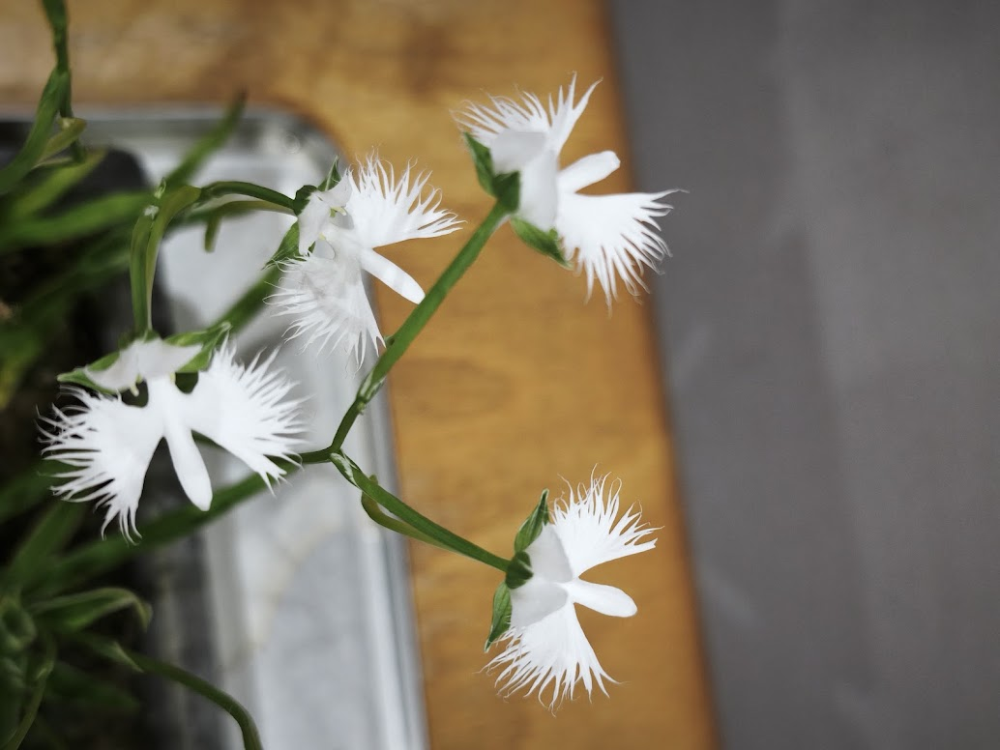
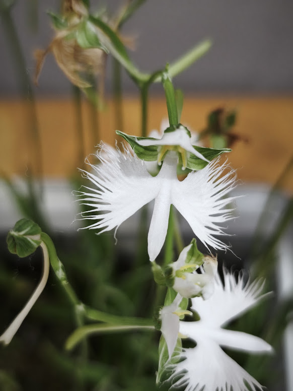
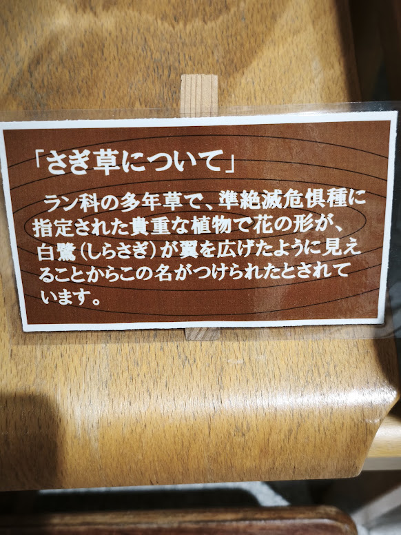

There is a beautiful flower that brings a cool feeling to summer in Nakanojo. It is called Sagi-so, or the “Egret Flower.”
The Sagi-so Festival is now being held in Nakanojo Town. Local people carefully grow these beautiful flowers and bring them together for everyone to enjoy.
Nakanojo is a town surrounded by mountains, forests, and rich nature. In summer, the pure white Sagi-so flowers create a very special scene in this green landscape.
Sagi-so is a small plant from the orchid family. It naturally grows in wet places. Its name comes from the shape of its flower. The small white petals look just like a white egret spreading its wings and getting ready to fly into the sky.
Although the flower is small, it has a wonderful beauty. When the flowers move gently in the summer breeze, they look like white birds dancing in the air. Looking at them can make us forget the summer heat for a moment. They give us a cool and peaceful feeling.
But the Sagi-so Exhibition has another special attraction. Each pot has been carefully grown and prepared by someone who loves these flowers. Some pots are arranged with moss and other small plants, creating a tiny natural landscape.
You may also hear local people talking about their flowers: “This year, they bloomed very well.” “It was not easy to grow them.” These simple conversations are part of the warmth of the exhibition.
The Sagi-so Exhibition is not just a place to see beautiful flowers. It is also a place where you can feel the love and care of the people who grow them.
If you visit Nakanojo this summer, please take a moment to see the Sagi-so. Like a white egret dancing in the summer air, these small flowers may bring a cool breeze to your heart.


